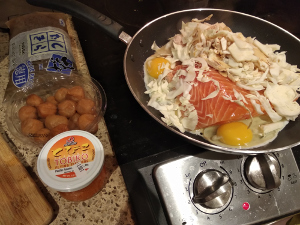
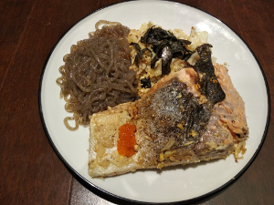

Chicken Salmon
 
Ingredients: * Salmon, chicken, eggs, shirataki noodels, omeboshi, tobiko (fish roe) cabbage, salt, pepper soy sauce, seasame oil, rice vineger, bonito, seasame seeds
How to make it: * Cook with a pan. Serve with cold shirataki and tobiko